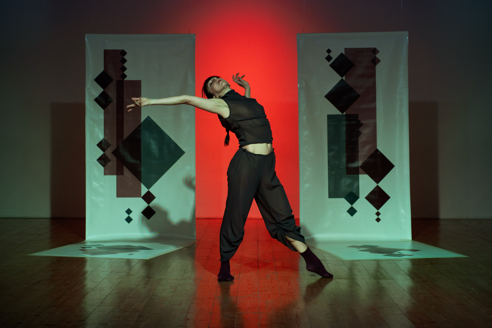

Sounding Stage | Inhabitable Augmented Painting | Perceptrum

The conceptual foundations of Augmented Painting were developed by Perceptrum through the development of the Sounding Canvas series. This work begins from a particular understanding of what it means to augment a physical artistic medium.
Within the conceptual framework developed by Perceptrum, Augmented Physical Objects constitute a broader class that includes both Augmented Paintings and Augmented Musical Instruments. These categories share a fundamental principle: augmentation concerns the physical object itself and its capacity to acquire new expressive possibilities while retaining its original identity.
From Augmented Painting to Inhabitable Augmented Painting
From this perspective, Perceptrum distinguishes augmentation from processes that operate only on the representation of an object. For example, augmented reality can superimpose or transform visual information through image processing, while an audio effect can transform an existing sound through signal processing. In both cases, the original physical object remains unchanged. The processing acts upon its representation, perception, or output rather than augmenting the physical object itself.
For Perceptrum, augmentation occurs when the physical object is equipped with sensors and/or actuators that provide new expressive possibilities without eliminating its original properties. The object remains what it fundamentally is, but it acquires new capacities through the integration of computation.
This principle is evident in both augmented musical instruments and Sounding Canvases. A musical instrument remains an instrument while acquiring new expressive possibilities through embedded sensing, actuation, and computation. Likewise, a Sounding Canvas remains a painting: its pictorial materiality is not replaced by technology, but augmented through embedded sensing and computational processes.
This is the meaning Perceptrum gives to the term Augmented Painting: a painting whose physical materiality is equipped with computational capabilities that extend its expressive possibilities while preserving painting as the primary artistic medium.
Beyond the Individual Painting
Sounding Stage takes this principle one step further. Rather than augmenting a single painting, the work composes several paintings into a larger pictorial environment. In its current realization, the composition consists of four painted elements: two vertical painted curtains and two painted floor surfaces.
Each of these paintings is individually augmented according to the Perceptrum approach. Capacitive sensing is embedded within the painted elements, allowing them to perceive touch and gesture while remaining fully recognizable as paintings. The four elements are therefore not independent interactive interfaces. They constitute the components of a single distributed pictorial composition.
The result is what Perceptrum calls an Inhabitable Augmented Painting: an Augmented Painting whose composition extends across multiple physical paintings and whose spatial organization allows the performer to inhabit the artwork itself.
The painting is no longer a surface that the performer stands in front of. The painting becomes the environment within which the performance takes place.
The Painting Becomes an Environment
In conventional painting, the viewer encounters the artwork from outside its pictorial space. In Sounding Canvas, this relationship changes through physical interaction with the painted surface. In Sounding Stage, the transformation is spatial: the performer enters the composition itself.
The four paintings define a performative environment in which the boundaries between pictorial composition, body, movement, and sound become interconnected. The performer does not simply interact with individual paintings. They move between them, approach them, touch them, leave them, and establish changing spatial relationships with the composition as a whole.
The spatial organization of the paintings is therefore itself part of the artwork. The intervals between the elements, the trajectories of the performer, and the moments of contact all become components of the pictorial composition.
Painting is consequently no longer only something to be observed. It becomes a medium through which embodied experience unfolds.
Embodied Interaction
The performer inhabits Sounding Stage through movement and touch. Capacitive sensors embedded beneath the painted surfaces allow the system to perceive physical contact without requiring external controllers, wearable devices, or visible technological interfaces.
Touch does not function as the activation of isolated commands. Instead, the system continuously interprets streams of interaction describing the performer's evolving engagement with the pictorial environment.
A hand touching a vertical painting and a foot contacting a floor painting are therefore not simply two different ways of pressing an interface. They are embodied gestures occurring within different regions of a single distributed painting.
The performer consequently becomes part of the composition itself. Movement is not an action performed in front of the painting; it is one of the elements through which the painting is continuously realized.
Painting, Computation and Sound
The computational system connects the four augmented paintings to an evolving sonic environment. Sensor data are interpreted as observations of the performer's ongoing interaction rather than as isolated trigger events.
A machine learning model maintains an evolving representation of the performative context. Its interpretation therefore depends not only on the current interaction but also on the history of what has already occurred.
The resulting sonic composition is consequently not a fixed sequence of sounds associated with predefined gestures. The performer influences the development of the musical environment through movement and touch, while the changing sonic environment influences subsequent performative decisions.
The relationship is therefore reciprocal. The performer does not operate the painting as an interface, and the painting does not merely respond to commands. Both participate in the continuous construction of the performance.
An Inhabitable Pictorial Composition
Sounding Stage should therefore not be understood simply as an interactive scenography with embedded technology. The scenographic space itself constitutes the painting.
The four painted elements remain distinct physical objects, but their relationships establish a single distributed composition. Their augmentation gives each element computational capabilities, while their spatial organization transforms the collection into an environment that can be inhabited.
This distinction is fundamental to the concept of Inhabitable Augmented Painting. The work does not abandon painting in order to become performance, installation, or scenography. Instead, performance and spatial inhabitation become additional dimensions through which painting can exist.
Sounding Stage thus extends the notion of Augmented Painting from the augmentation of an individual painted object to the augmentation of a distributed pictorial environment.
The Performer's Perspective
"I had grown tired of following an immutable choreographic structure. With Sounding Stage I discovered an open artwork that constantly keeps me active. The stage never behaves exactly the same way twice, so I find myself dancing with the environment rather than simply inside it."
— Anna Manes
For the performer, the painting becomes an active artistic partner. The choreography is not simply executed within a predetermined environment. It develops through an ongoing process of perception, movement, interpretation, and response.
The performer progressively develops an embodied understanding of the painting's musical affordances. Rather than memorizing fixed input-output mappings, they learn to negotiate the relationships between movement, touch, space, and the evolving sonic environment.
The Premiere
Sounding Stage premiered on 18 April 2026 at The Loom – Movement Factory in Prato, Italy, within the performance The Visible Breath of Frequency, featuring choreography and performance by Anna Manes and music by Luciano Ciamarone.
From Sounding Canvas to Inhabitable Painting
Sounding Stage represents a continuation of Perceptrum's research into the expressive possibilities of Augmented Painting.
With Sounding Canvas, painting becomes a physical object capable of sensing and responding while retaining its identity as painting. With Sounding Stage, several such augmented paintings are composed into a larger spatial structure whose entirety becomes an augmented pictorial environment.
The result is not a painting placed within a stage.
The stage itself becomes the painting.
And because the performer can enter, move through, and physically engage with its composition, the painting becomes inhabitable.
The performer does not stand before the painting. The performer inhabits it.